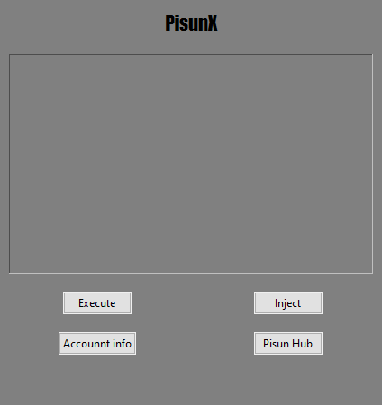

The Future of Roblox exploiting is here
PisunX - first executor that bypassed byfron


PisunX - first executor that bypassed byfron
We priced our product fairly and unlike some, we don't charge $7 a week, we charge $9 a month
PisunX 2.0 offers a range of advanced features, including HWID spoofing, IP spoofing, backdoor detection*, multi-injection, automatic injection, auto-execution, and more. We have introduced a cutting-edge PRIVATE security method, ensuring near-complete anonymity (particularly effective when using Pisun X and Pisun Hub in conjunction). The development of this technology spanned approximately six months, reflecting our commitment to delivering top-tier security.